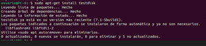

TestDisk es una utilidad para la recuperación de datos licenciada como software libre. Fue desarrollado principalmente para ayudar a recuperar datos perdidos en particiones y para reparar discos de arranque, problemas causados por software defectuoso, algunos tipos de virus o errores humanos. Es fácil de instalar en cualquiera de nuestros sistemas operativos linux por lo que no nos llevará ni mucho tiempo ni esfuerzo.
Ejecutaremos dos sencillos comandos, pero para ello tendremos que abrir la terminal. El primero de ellos será un sudo apt-get update que se encargará de actualizar la lista de paquetes disponibles y sus versiones respectivamente. Estos paquetes se cogen de una lista que tienen los servidores, por lo que no tendremos que descargar nada para instalar TestDisk en nuestra máquina.
Una vez realizado el comando anterior, ejecutaremos el segundo comando que nos instalará TestDisk. Escribiremos sudo apt-get install testdisk y una vez que haya terminado tendremos un programa para la recuperación de datos en nuestra máquina. Para iniciarlo solo tenemos que escribir Testdisk en nuestra terminal para que inicie